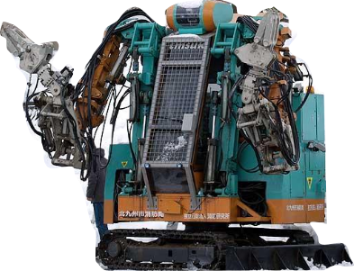
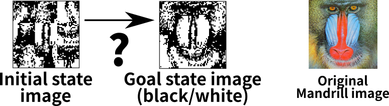
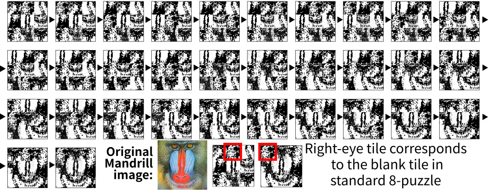
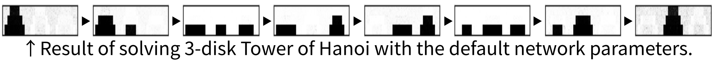
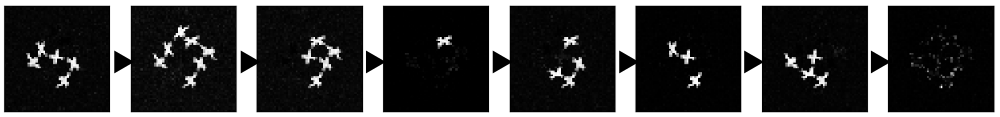

Classical Planning in Deep Latent Space
東京大学大学院 博士2年
総合文化研究科 (渋谷駒場キャンパス)
学振DC2
浅井 政太郎
Made by guicho2.71828 (Masataro Asai)
1 もくじ
- Background – 専攻分野 – AIプランニング
- CV
- IJCAI投稿論文 – 深層学習 + AIプランニング
2 イントロ – 専攻分野 – AIプランニング


2.1 誰?
And let me introduce these robots. The guy in the left is Astro boy.
2.1.1 誰?

As you know, he is a famous manga superhero invented by Tezuka Osamu in 50s,
2.1.2 誰?
and he can think, hear, speak, act. he also has emotions.
2.1.3 誰?

In contrast, the guy in the right is a real robot that is actually in use @ fukuoka prefecture for the rescue purpose.. His name is T-52 Enryu, developped by a Japanese company Temzak. He is huge and powerful – about 4 meters in height and can carry things which is as heavy as 500kg. Well, so, in a sense, he is also a superhero in the real disastrous situation.
2.1.4 誰?

But does he have feelings or can he think? Can he even move around by his own?
2.1.5 誰?

No. It requires full human intervention — it is indeed operated by a driver who gets in or by a remote control. It is more like a super-sophisticated shovel car.
2.2 実際の大規模災害では非実用的 — 操縦士が足りない!


- そのままでは役に立たない!
Now the problem is : It's ok in small accidents but is impractical in the real, massive natural disaster which frequently occurs in Japan. The key resource is human — These special purpose vehicles require human intervention, thus they are useless without trained operators.
2.2.1 操縦士を増やせない – Human Resource and Training
- ✘ 時間 がかかる
- 訓練に ＞100時間, 必要な時だけ増やす のは不可能
- ✘ ￥￥￥￥ がかかる
- 訓練官、訓練場所、訓練用具
- ✘ 技術は 維持が重要
- 定期的な再訓練、長期的コスト、さらなるマニー
- ✘ 平時は 無駄 な技術
- 普段は意味がない – 無駄なマニー!
In a natural disaster, we need as many experienced operators as possible. However, it is virtually impossible due to several reasons.
First, training takes time. It is impossible to quickly increase the number of operators as needed, at the time of disaster.
Second, the money matters. Training a person costs a lot of money, including: the cost of maintaining a training center, the cost of additional vehicles for training, the cost of training the trainers, wages for trainers, etc.
Third, Skills need to be updated and maintained. You know, how about preparing the large number of operators in advance? No, the society cannot torelate the cost of keep training them. Operators may lose the skills and skills may become outdated.
Finally, in a normal situation, those skills are useless. It forces the society to waste a great amount of extra money.
2.3 だからこそ: 自動プランナ Automated Planner
研究テーマのプランニングは、ロボットに、人間の助けを借りず、いかに自律して行動させるかを扱います。 これをモデル化したプランニング問題は、具体的な行動の列を求める 組合せ最適化問題です。
プランニング問題のタスクは、 センサーから初期状態とゴールを受け取って、被災者を助ける正しい手順を出力することです。
たとえば、この図では男性が瓦礫に埋まって助けを求めています。 プランニング機能のあるロボットは、コレに対して「男性を助けよ」という大まかな指示を受けます。
2.4 だからこそ: 自動プランナ Automated Planner
指示の内容には、図のように初期状態とゴール、許可された行動のリストが入っています。 ロボットは、自動プランニングにより、人間の代わりに適切な行動を組み立てて、ゴールを自動で達成します。
2.5 だからこそ: 自動プランナ Automated Planner
プランニングは汎用な枠組みなので、災害救助以外にも様々な問題に適用することができます。 現実の応用例では「宇宙探査機運行問題」や「企業ネットワーク脆弱性問題」も表現できます。
このように、プランニングは、難しい問題を汎用性を失わずに解くことを目指します。
2.6 AIと自動プランニング の位置づけ – 理論 と 実応用 の中間
緑は 理論 、オレンジは 実応用 、 AI はその橋渡し (どれともかぶらない部分もある)
Automated Planning is a branch of Aritificial Intelligence.
It shares a lot of technology with Operations Research and Theoretical Computer Science, and is considered a bridge between pure theory and pure applications.
3 プランニング問題 (決定的,完全情報) – Blocksworld
3.1 アクション = 条件付き状態遷移
アクション (move ?X ?Y)
?X, ?Y : 変数。 値 BLOCK-A, BLOCK-B などを適用して使う
前提条件 と 効果 で構成される
前提条件 が満たされた時…
命題 (clear ?X) : 積み木 ?X の上に何も置かれていない
命題 (clear ?Y) : 積み木 ?Y の上に何も置かれていない
効果 を適用
⇒ 命題 (on ?X ?Y) を追加 : ?X が ?Y の上に移動
⇒ 命題 (clear ?Y) を削除 : ?Y は clear ではなくなる
3.2 PDDL : Planning Domain Description Language
International Planning Competition で使われている入力形式
(:action move :parameters (?X ?Y) :preconditions (and (clear ?X) ; (1) (clear ?Y)) ; (2) :effect (and (on ?X ?Y) ; (3) (not ; (4) (clear ?Y))))
宇宙探査機 NASA DS1 上の Remote Agent 自動航行システム でも "DDL" という名で 似たような記述言語があったようだ
3.3 プランニング = グラフ探索
ノード : 状態 = 命題の集合 ⇒ (on A B), (clear A) など
辺 : アクション ⇒ (move A B) 等
*1 [Helmert, 2006] [Richter, 2010]
3.4 [一般向け] Q. はやりのDeep Learningとの違いは?
A. レイヤが違う
機械学習・Neural Networks
for 認識・反射
- 入力 は Subsymbolic (連続値)
画像、音声、非構造化テキスト:
- 直感/脊髄反射的知能:
直後 の行動の決定
パブロフの犬 : 餌→よだれ
自動運転 : 赤信号,人 → 止まる.
翻訳 : 文章 → 文章
囲碁局面の評価関数 : 局面 → 勝率
☺ 効率よく 1-to-1 mapping
☹ 単純作業
推論・探索
for プランニング・ゲーム・定理証明
- 入出力は Symbolic
論理 オブジェクト ルール
- 論理・推論による知能:
未来に渡る 戦略の決定
(戦略 = 行動の 列や木)
レスキューロボ : ゴール = 被災者生存
証明器 : ゴール = QED
コンパイラ : 命令列の生成
囲碁,将棋 : ゴール = 勝利
☺ 時間的依存関係を含む論理の組み合わせ
- AlphaGo = Subsymbolic (DLNNによる評価関数の学習) + Symbolic (UCT-MCTSによる探索)
3.5 既存の有名システム
- AlphaGo = Subsymbolic (DLNNによる評価関数の学習) + Symbolic (UCT-MCTSによる探索)
- ただし 囲碁に特化
- 膨大な棋譜が必要 — 少数データしかない環境(e.g.宇宙探査機)には適用不可能
- DQN = DLNN (Subsymbolic) + Reinforcement Learning (Subsymbolic)
- 様々な Atari Game につかえる汎用的なフレームワーク (Invader, Packman…) だが
- ほとんどのゲームは 脊髄反射的な操作で長く生き残ることが出来る
- Atariゲームに複雑な論理思考能力は必要ない から RL で成功した
- 実際、 Sokoban など論理思考が求められるAtariゲームでは性能が良くない
DLNN: Deep Learning Neural Network
UCT-MCTS: Monte Carlo Tree Search + Universal Confidence Bound applied on Trees
4 CV
配布
5 IJCAI投稿内容
Classical Planning in
Deep Latent Space:
From Unlabelled Images to PDDL (and back)
5.1 高度に知的な機械を作るには → DeepLearning + 論理と推論
- ディープラーニングのみ
↓
虫程度の知能を持った
反射的な機械
vs
- DL + 論理、推論、思考
↓
目標を達成するために
論理で戦略を練る機械
5.2 ゴール
State of the Art
Deep Learning
＋
State of the Art
Classical Planning
5.3 スライディング タイル パズル (8-Puzzle)
空きパネルとそれ以外を移動させることで絵を完成させるパズル

古典的なAI問題として知られている
可能な曲面の数は 362880 個
4x4の15-パズル、5x5の24-パズルはさらに難しい
5.4 論文のゴール: 棋譜なし・事前知識なし 訓練画像のみ 完全自動で 8-puzzle を解くAIシステムを作る
棋譜なし : 棋譜から学習した勘(評価関数)で解くAlphaGoと異なる
事前知識なし : 「パネル」「9マスある」「パネルが動く」などの事前知識(ラベル、シンボル)は与えられない
5.5 論文のゴール: 棋譜なし・事前知識なし 訓練画像のみ 完全自動で 任意の問題 を解くAIシステムを作る
8-puzzle だけでなく 任意の問題を解く
ハノイの塔

Lights-Out

6
システム概要
6.1 入力1: Training Inputs – Image Pairs
実行可能なアクションの例を示す画像ペア

6.2 入力1: Training Inputs – Image Pairs
6.3 入力2: Planning Inputs – Initial Image & Goal Image
探すべきプランの 始点と終点 にある2つの状態 を示す画像
6.4 論文のゴール: 棋譜なし・事前知識なし 訓練画像のみ 完全自動で 任意の問題 を解くAIシステムを作る
6.5 実行例 (MNIST 8-puzzle)

6.6 実際の問題の例 (Mandrill 8-puzzle)
MNIST 8-puzzle は 「物体」のようなものが明確に分離されている
この実験 は このシステムがそのような特性に左右されないことを示す

6.7 実行例 (Mandrill 8-puzzle)

6.8 実行例 (Tower of Hanoi)
全く意味の異なる入力でも解けることを示す

6.9 実行例 (Lights Out)
8-puzzle も hanoi も 「物体」のようなものが「消えない」という性質がある。
この実験 は このシステムがそのような特性に左右されないことを示す
6.10 実行例 (Skewed Lights Out)
8-puzzle, hanoi, LightsOut は 「物体」のようなものが格子状に並んでいる
この実験 は このシステムがそのような特性に左右されないことを示す

6.11 ノイズのある入力にも対応

7 どうやって作ったのか？ 予想された困難
基本アイディア: DLNN + Classical Planner
- 1. ラベル無し画像データからなんとかして知識を取り出したい
- どんな知識をどうやって? ← 自明でない
- 2. 取り出せたとする。NNで発見される知識は Subsymbolic: 実数値
- プランナが必要とするのは Symbolic な入力: 離散値・命題・真偽値
- システム全体が Unsupervised, 画像入力だけでラベル無し
- Subsymbolic を Symbol をどう変換する? (Symbol Grounding) ← 自明でない
- 3. 仮に自動的に Symbol を 生成したとして
- 自動的に作られた Symbol は人に理解できる形式ではおそらくない
- 機械のSymbolをどうやって人の理解できる形式にするか？ ← 自明でない
8 Latent-space Planner: LatPlan
以上 学習, Symbol Grounding, Symbolの解釈 を同時に解決し
生の入力のみから完全自動で 任意の問題 を解くシステム
8.1 Autoencoder
教師なし学習
入力空間 S を Latent Space L に 圧縮
かつ S に 展開 して 元の画像に損失無く戻す。

→ データ \(x\) を Latent vector \(z\) に変換/逆変換するNNを学習
8.2 Deep Autoencoder
いろいろな追加技術を使うことでDeepにできる → より圧縮できる
Stacked AE, pretraining, CNN, dropout, Batch-Normalization, GPU…

8.3 State Autoencoder
8.4 Gumbel-Softmax Reparametrization (Jang, Gu, ICLR2017)
入力をカテゴリカル分布にマップする Activation Function
2/3に採択
8.5 Gumbel-Softmax
学習中に温度を下げていくことで 始めは自由に学習
そののち、精度を保ったまま 中間層の分布を離散カテゴリカルに近似

\(N\times M\) 行列を出力, \(N\): 変数の数 \(M\): カテゴリの数
- \(M=2\) → N個の命題(true/false)にマップ可能
8.6 State Autoencoder
- SAEを学習させることにより以下の関数を得る:
- \(b = Encode(r)\) : 生データ \(r\) を boolean vector に変換する関数
- \(\tilde{r} = Decode(b)\) : boolean vector \(b\) を 生データ \(\tilde{r}\) に変換する関数
8.7 Entire System
9 評価
GTX1070, PhenomII X6 1060T (3.4GHz overclock), 16GB Mem
- Classical Planner
- Fast Downward (State-of-the-Art solver, C++)
- State AutoEncoder
- Tensorflow, Keras, Adam optimizer (learning rate:0.001)
784(84x84)
→FC(1000,ReLu)→Batchnorm→Dropout(0.4)
→FC(1000,ReLu)→Batchnorm→Dropout(0.4)
→FC(25,GumbelSoftmax)
→FC(1000,ReLu)→Batchnorm→Dropout(0.4)
→FC(1000,ReLu)→Batchnorm→Dropout(0.4)
→784(84x84) (loss: Binary crossentropy)
9.1 State AutoEncoder
1: Train入力 2: 生Latent 3: 生Autoencoding 4: 切り捨てLatent 5: 切り捨てLatentのAutoencoding

9.2 State AutoEncoder
1: Test入力 2: 生Latent 3: 生Autoencoding 4: 切り捨てLatent 5: 切り捨てLatentのAutoencoding
Test 入力: 訓練画像に含まれていない画像

きちんと学習できている
9.3 State AutoEncoder
入力2: 初期画像とゴール画像

9.4 PDDL Domain Definition
\(N=25\) の例
(define (domain latent) (:requirements :strips :negative-preconditions) (:predicates (z0) (z1) (z2) (z3) (z4) (z5) (z6) (z7) (z8) (z9) (z10) (z11) (z12) (z13) (z14) (z15) (z16) (z17) (z18) (z19) (z20) (z21) (z22) (z23) (z24)) (:action a10000010010110111100011111000010001011111110011111 :parameters () :precondition (and (z0) (not (z1)) (not (z2)) (not (z3)) (not (z4)) (not (z5)) (z6) (not (z7)) (not (z8)) (z9) (not (z10)) (z11) (z12) (not (z13)) (z14) (z15) (z16) (z17) (not (z18)) (not (z19)) (not (z20)) (z21) (z22) (z23) (z24)) :effect (and (z5) (not (z6)) (z13) (z20))) (:action a10000010010110111100011110000001001011011110001110 ...
9.5 人間が書いたドメイン用の枝刈り技術が この未知の自動生成ドメインでも有効
| Heuristics | Search Time (sec) | Node Expansion |
|---|---|---|
| MNIST 8-puzzle | ||
| blind | 1.904 | 193924 |
| pdb | 1.780 | 109096 |
| blind | 1.751 | 201156 |
| pdb | 1.508 | 111642 |
| blind | 1.657 | 186767 |
| pdb | 1.215 | 84561 |
| blind | 1.514 | 183336 |
| pdb | 1.474 | 82518 |
| blind | 1.460 | 169907 |
| pdb | 0.685 | 52084 |
| blind | 1.489 | 130863 |
| pdb | 0.382 | 26967 |
| Hanoi (4 peg) | ||
| blind | 0.0008 | 55 |
| pdb | 0.0006 | 17 |
| LightsOut (4x4) | ||
| blind | 0.0159 | 952 |
| pdb | 0.0013 | 27 |
| Spiral LightsOut (3x3) | ||
| blind | 0.0040 | 522 |
| pdb | 0.0026 | 214 |
| Mandrill 8-puzzle | ||
| blind | 2.759 | 335378 |
| pdb | 1.113 | 88851 |
10 Conclusion
- 入力:
- ラベル無しの生の入力データで与えられた状態遷移規則
- ラベル無しの初期状態・ゴールを表す画像ペア
- 出力: ゴールを達成するためのプランを表す画像列
- State AutoEncoder(SAE): Gumbel-Softmaxを用いたVAE
- 主な貢献: SAEによって生データから生成したシンボリック表現を用いてプランニング問題を解けることを実証
- SAE の実装を変えれば(原理的には)画像以外の任意の入力データに対応可能なはず
- テキスト用のAE: Li et al. "A hierarchical neural autoencoder for paragraphs and documents." (2015)
- 音声用のAE: Deng, Li, et al. "Binary coding of speech spectrograms using a deep auto-encoder." Interspeech. 2010.
- Here's an Apple, Here's a pen → oh, ApplePen!
- SAEを学習してプランナで解く → 数千ステップの高速な言語レベル推論が可能に
11 今日のメッセージ
目標:
ルールベース人口無能を超える 論理を備えた 真に知的なチャットボット
NLPエキスパートと 探索エキスパートの力を合わせて このシステムを作ってみませんか？